Intent Partners is a social impact consultancy that empowers businesses and consumers to work together and improve communities.
Intent Partners is a social impact consultancy that empowers businesses and consumers to work together and improve communities.
User Researcher
UX Design
Visual Design
Branding & Identity
Competitive Analysis
User Surveys
User Personas
User Stories & Flows
Wireframes
User Testing
Brand Identity
Visual Design
Hi-Fidelity Prototype
Survey Monkey
Sketch
Usability Hub
Invision
I discovered an opportunity to improve the way that companies approach social impact strategies and designed Intent partners, a social impact consultancy offering a suite of management services and digital mapping tools.
The client, Intent Partners, a startup social impact agency, needed to create a digital presence that differentiated them from organizations with similar missions.
Discovering that employees are unclear about how to drive corporate social impact and that consumers are seeking transparency, the project seeked to fill a previously unmet market need by designing tools for companies to see and pursue local micro impacts and for consumers to seek out businesses that commit to their local community. The intent partners site was designed to introduce the company and its services while filling this unmet need.
Key Findings
Consumers
Consumers are 10% more willing to support cultural events that support a cause than a tangible product
Consumers are 10% more willing to support products and events that yield a monetary donation to a cause vs those that raise awareness.
Consumers express an interest in making decisions based on facts rather than emotion.
Prefer to see data in interactive graphics rather than static charts and lists.
Business Leaders
88% of business leaders view community needs as fluid and evolving over time but only 63% indicate that they know what's important to their audience.
54% don't feel empowered to enact a social impact int heir workplace.
50% believe the optics and attitude toward the brand are more important than a measured improvement in the social issue of choice or an increase in revenue when asessing the success. Less than 1/3 (29.17% believe that improving the issue is the most important measure of success)
25% are interested in gaining the interest of millennials, aged 25 - 34.
Personas were constructed to summarize and represent the user research data.
 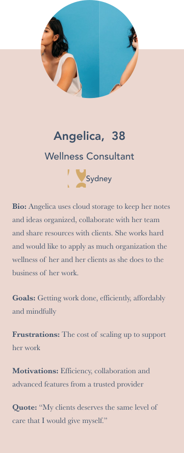
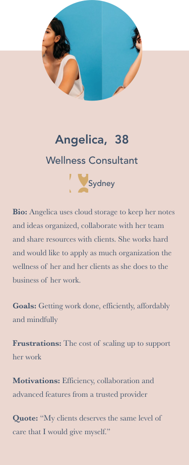
Impactual, Do Something Strategic, and Bridgespan Group are three consultancies that take a unique apporoch to advising their clients on developing powerful social impact initiatives. Impactual touts it focus on real impact over optics, Do Something Strategic provides unique access to proprietary data on the Gen Z and millennial audience, and veteran leader, Bridgespan Group advises change-making organizations and investors.
While they all use story telling to demonstrate their individual acumen, none tackle the needs expressed by users, such as provide a transparent tool for consumers to identify real-impact focused businesses, proprietary opportunity discovery and impact managing tools, and resources to activate the corporate workforce as impact evangelists.
| As a business leader, | I want to see an explanation of what services Intent Partners offers so that I know the site is relevant to my business. |
| As a business leader, | I want to see case studies of Intent partners work with results presented clearly and interactively so that I know that I know they can deliver the clear and transparent results that demonstrate measurable impact on pressing social problems that will resonate with millennial consumers. |
| As a business leader, | I want to see an evolving map of social needs and brief reccomendations of how to help so that I can prosthelytize involvement in my workplace. |
| As a consumer, | I want to see an Intent Map illustrating where concrete results were created, so that I can make decisions on where to support cultural initiatives that will create a quantifiable financial impact to a cause. |
| As a user, | I want to see relevant contact, social, and mailing list information so that I can follow up to engage IPs services or keep in contact until that time comes. |
After initially creating one large flow to represent the three main processes users would undertake, I divided them into four user flow groups to be more digestible:
1. View introduction and services offered
2. Verify outcomes via case studies
3. View the community needs map to identify opportunities to help
4. View the Intent Map showing companies with Intent
I evaluated the user flows and created a site map to document the pages/sections needed to be constructed for a user to achieve each flow. I then creates sketches and wireframes to determine how to best visually represent the components of the map. Knowing what a potential layout may look like allowed me to begin to consider the text and graphical content required to most efficiently communicate what was necessary in each area of the web app.
As I was working on this, I considered how to best structure menus, what deserved a seperate page and what would be best shown on a scrolling one page landing.
So how would these pages tell the story? The content needed to cover all the bases so extensive thought went into what each area of the site would contain and it was compiled to begin strategizing a plan.
It was challenging to create an architecture that packed significant content in an approachable way that wasnt overbearingly heavy on the number of pages.
Initial sketches served as an opportunity to begin to experiment with potential layouts of the information.

Sketches were refined to produce the first round of paper wireframes.
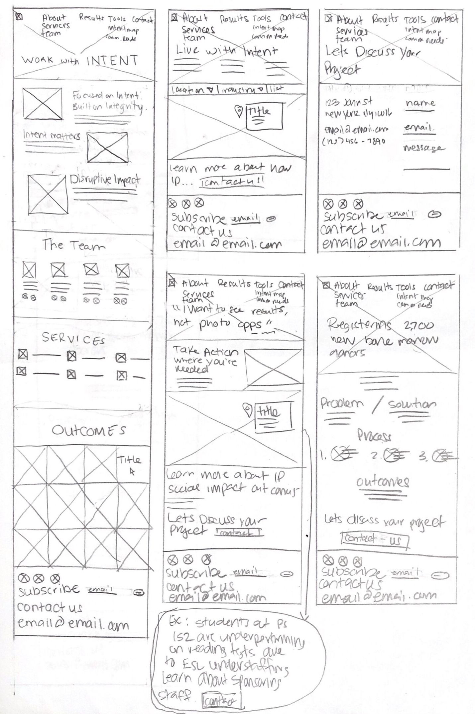Paper wireframes were used as a basis to develop digital wireframes.
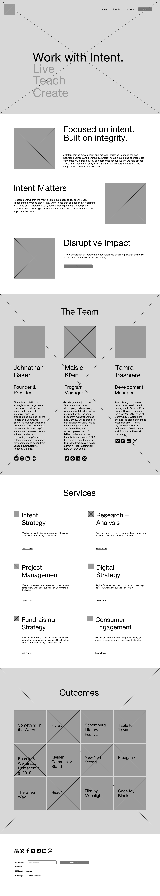
 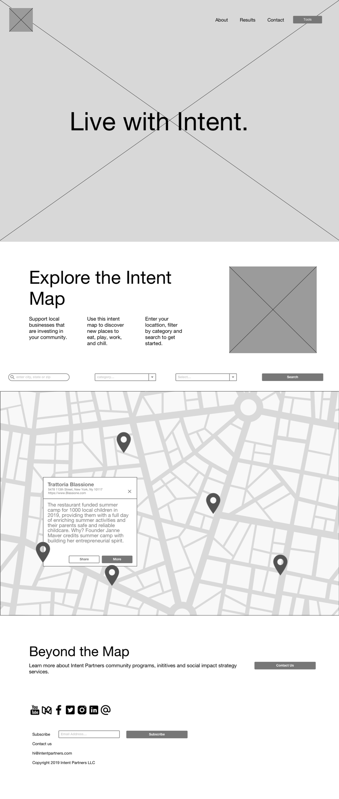
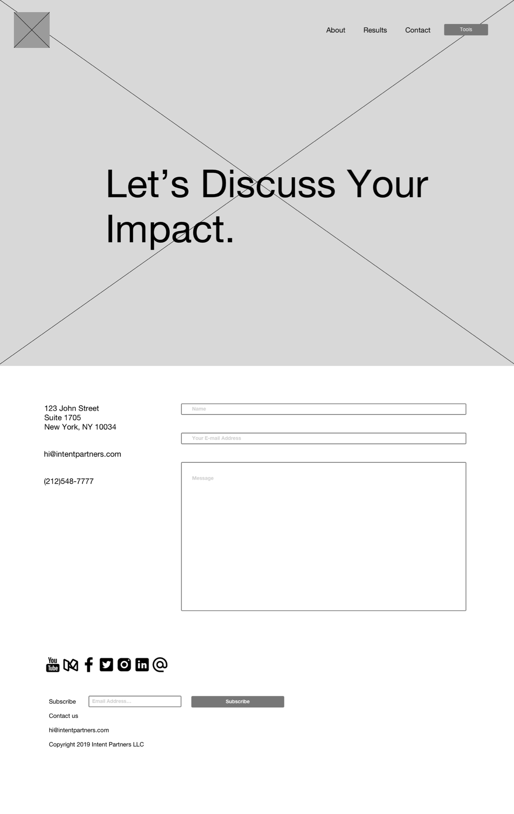
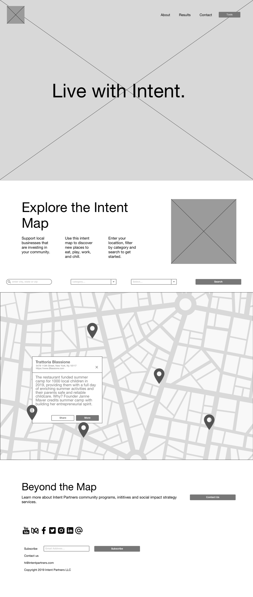
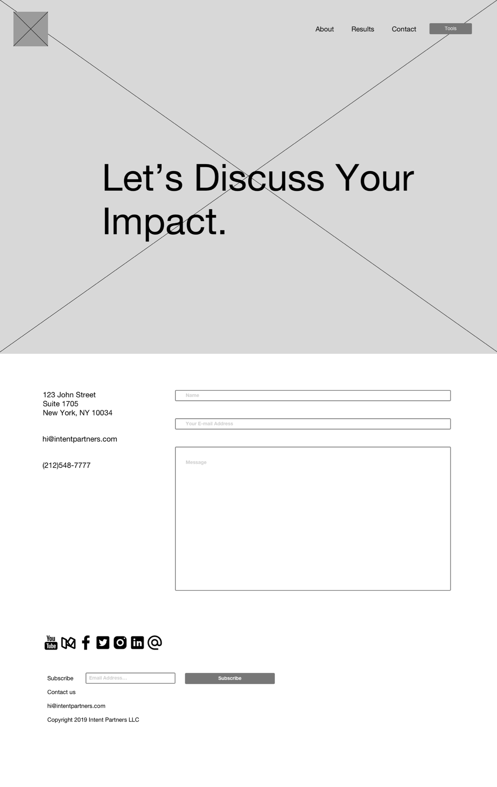
I recruited three user testers to evaluate the protoype’s usability. They were asked to complete three tasks.
1. Sign up for an account
2. Add a piece of content
3. Organize a piece of content
Key Takeaways
I should revisit the availability of the free signup pathway and the wording of the buttons on the landing page to better indicate how a new user can get started.
I need to consider adjusting a future testing script to better reflect the sorts of concerns that I expect to arise during testing and I need to be more explicit about the directions given, such as asking users to sign up for the premium account rather than leaving the choice up to them.
I engaged in brainstorming and mindmapping exercised to narrow down naming ideas and settled on Verve because it was a short moniker that embodied the clean energy and vitality the app needed to project.
The branding should reflect the app’s positioning at the intersection of self care and data while maintaining a clean and sleek interface.
 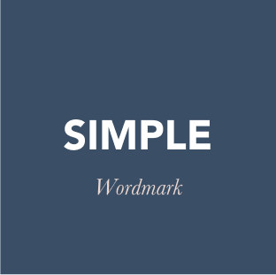
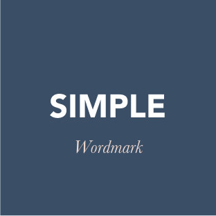


My initial logo sketches explored ways to incorporate a monographic “v” and imagery to indicate the cloud and data insight aspects of the service.
I created digital refinements of a few of the ideas and conducted an early round of preference tests for clarity on which ideas were the strongest.

Based on the results of an early preference test, I reduced my number of digital sketches and further refined them.
In a second round of preference tests and a subsequent design critique, Option 2 performed the best. While close to being a solid solution, because of its simplicity, implementation of the V monogram and allusion to the statistical data of the Verve insights and data features, it did require some minor adjustments.
I chose Geosans Light as the brand typefaces because it delicately compliments the bold shapes of the Verve logo mark while remaining minimal and modern.
I chose Montserrat as a complimentary typeface for use throughout the app for its readability. As with the brand typefaces I wanted to use a font that would be minimal and modern.
I began to research which colors that would help users establish expectations early on in their interaction with the app. I considered what various colors and combinations would convey, energy, health, wellness and purity. I looked at the colors used by competitors and started out with preference testing a few color palettes.
A blue tone palette was preferred by 63% of respondents. This confirmed my early inclinations about colors that would be suitable. I also found that blue was heavily used by competitors and color theory research revealed that this is a reliable and trusted choice, so not an unpopular one.
Wanting to add more dynamism and depth to my color palette, I tested user response to combining gradients. This was preferred 67% of the time.
Based on client feedback, I made slight adjustments to the palette and decided to use a gradient shade of blue as the primary color, in combination with a gradient shade of pink, in combination with gray, white, black and yellow.

 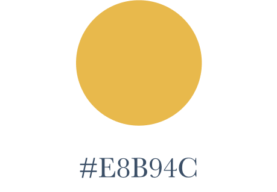
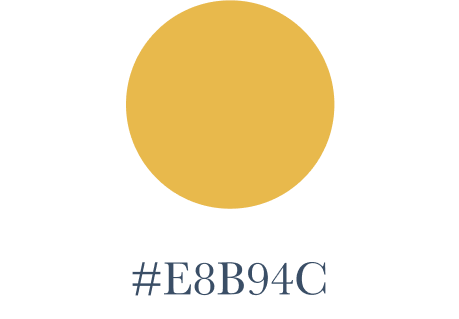
 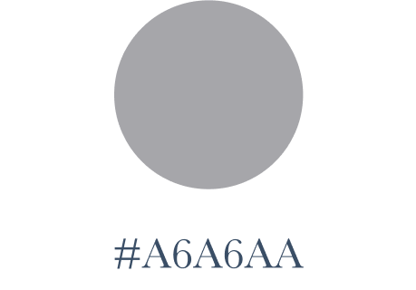
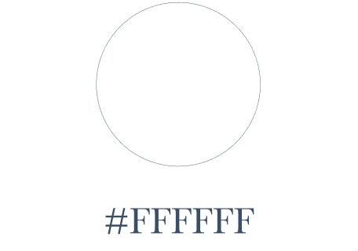
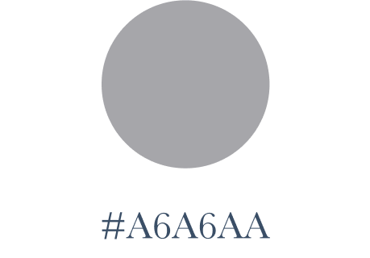
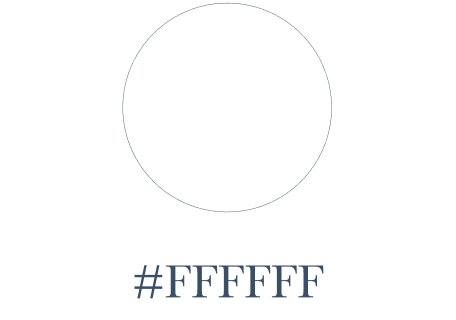
I proceeded to prepare a full style guide that included the color palette along side additional branding guidelines such as typography, logo usage, and iconography.
As I created hi-fi mockups, I discovered design elements that previously seemed to recede into the background of the app, but in actuality needed to be considered as part of a design pattern. Design features like process tracking dots and text captioning on menu icons, needed to be considered as I was developing high fidelity mockups.
There were still a few design decisions that I was uncertain about. Rather than choosing them based on my own preferences, it was important to get feedback from potential users. I preference tested various components such as button style, insights dashboard layout and landing page copywriting.
I discovered that a solid blue button style, a one-screen dashboard view and direct, unquestioning text were overwhelmingly preferred. These revelations guided me as made a few changes before retesting my prototype.
Once again, I recruited three user testers to evaluate the prototype’s usability. They were asked to complete three tasks.
1. Sign up for an account
2. Add a piece of contentt
3. Organize a piece of content
Key Takeaways
Following testing, I concluded that the application is best used by those with some existing familiarity with mobile applications, such as my target audience. One of the usability testers had limited experience with mobile applications and struggled with identifying visual cues indicating next steps. Further consideration could be given to engaging users with limited experience, but this called for a design approach that would be overly explanatory for our target user. Even users familiar with mobile apps appeared to be in need of better cues and directions in menu navigation.
I considered that usability testers were having difficulty in determining which upload option to use to create a new product. While they ultimately did it successfully, it required multiple attempts and consideration to determine which menu options to use so I adjusted the menu options.
Based on design critique feedback, I made improvements to the empty state dashboards, providing a boundary to more clearly indicate the emptiness of the repository and including a call to action to “add your first file”.
I also adjusted the photo and file uploading screens to adhere to iOS Human Interface Guidelines to avoid adding an unfamiliar process with minimal experience value. At this stage, the product met all of the needs of the initial client brief, the needs revealed through user research, accounted for the feedback received in testing and critiques and incorporated Human Interface Guidelines.
Verve satisfies the client brief by successfully pursuing a unique entry into the cloud storage market for a wellness and productivity-minded consumer. With the client brief providing a strong framework within which to explore and develop the idea, the end product's design is truly driven by user research and testing so that the client sees optimal results in monetizing the product.
I design solutions keeping the user and market needs in mind first, but also with developmental capabilities as well. In considering the application of mapping tools, it was valuable to consider the complexity of development required to achieve certain goals and tailor this to the particular projects restraints.
Research will throw unexpected information at you. Sometimes your project will allow for exploration of it, and at time it won't. When I set out to better meet the needs of corporate clients, I discovered that providing a tool to their consumers also benefitted my original goal in a synergetic way. If I had not been open to exploring unexpected solutions, a valuable and unique approach could have been missed.